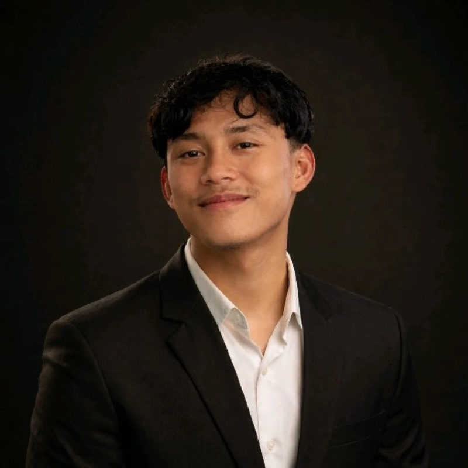

Portofolio Akademik
Saya merupakan mahasiswa aktif pada Program Studi Teknik Informatika di Universitas Muhammadiyah Magelang. Fokus utama saya saat ini adalah mendalami dasar-dasar pengembangan web dan struktur data. Saya memiliki ketertarikan yang tinggi terhadap logika pemrograman serta penyusunan kode yang efisien untuk menyelesaikan berbagai permasalahan digital. Di luar perkuliahan, saya secara mandiri mengeksplorasi konfigurasi lingkungan kerja pengembang, mempelajari manajemen basis data, serta mempraktikkan pembuatan antarmuka web yang terstruktur dan mudah digunakan.

Bagi saya, pemrograman bukan sekadar menulis baris kode, melainkan seni memecahkan masalah melalui logika yang sistematis. Melalui portofolio ini, saya mendokumentasikan komitmen saya untuk terus bertumbuh di industri teknologi.
Saya selalu terbuka untuk diskusi akademis, kolaborasi tugas pemrograman, maupun proyek pengembangan web di lingkungan kampus.
Apakah Anda ingin berdiskusi mengenai proyek kuliah, studi kasus pemrograman, atau kolaborasi akademis? Silakan hubungi saya melalui platform di bawah ini: